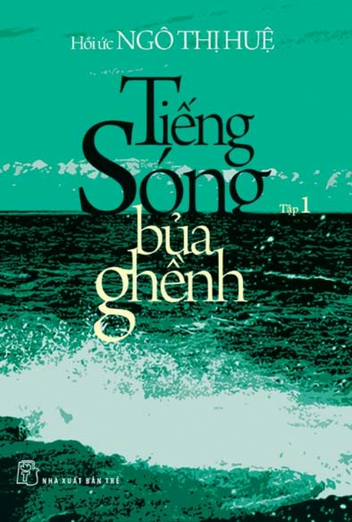

Tiếng sóng bủa ghềnh - Hồi ức của Ngô Thị Huệ

Lần cập nhật cuối lúc Thứ năm, 23 Tháng 10 2014 08:13 Viết bởi Administrator Thứ năm, 23 Tháng 10 2014 08:07
Kỷ niệm 84 năm TLHLHPN Việt Nam ( 20.10.1930 - 20.10.2014 và 4 năm ngày Phụ Nữ)

Việt Nam từ trước tới nay với bạn bè năm châu một dân tộc anh hùng, gan góc, kiên cường đã trải qua những cuộc chiến khốc liệt nhất trong lịch sử . Trong suốt cuộc đấu tranh đó phụ nữ là tầng lớp chịu nhiều áp bức , bóc lột, bất công, nhưng luôn là lực lượng chủ chốt trong việc đánh đuổi giặc ngoại xâm từ thời phong kiến cho đến giai đoạn trường kỳ kháng chiến chống thực dân Pháp, đế quốc Mỹ, Nhật,... Họ là những chiến sĩ chống giặc ngoại xâm dũng cảm , người lao động cần cù, sáng tạo, thông minh , nắm vai trò quan trọng đặc biệt trong việc giữ gìn bản sắc văn hóa dân tộc, đúng như lời Bác Hồ đã từng khen tặng “Kiên cường , bất khuất , trung hậu , đảm đang,” (vẽ nên trang vàng lịch sử như : hai Bà Trưng, Triệu, Bùi Thị Xuân , Võ Thị Sáu, Nguyễn Thị Định , Ngô Thị Huệ,...) thật vẻ vang , chói ngời.
Kính thưa quý thầy cô cùng tất cả các em học sinh thân mến !
Nhân ngày 20 tháng 10, ngày phụ nữ Việt Nam, thư viện trường THPT chuyên Nguyễn Bỉnh Khiêm trân trọng giới thiệu cuốn sách “Tiếng Sóng Bủa Ghềnh”. đây là tập hồi ức do bà Ngô Thị Huệ , phu nhân của cố tổng bí thư Nguyễn Văn Linh, đồng thời là người đã có đóng góp to lớn cho phong trào cách mạng của phụ nữ Nam Bộ ở cả 2 cuộc kháng chiến , làm tác giả.
Khi viết lời giới thiệu cho cuốn sách, cố thủ tướng Võ Văn Kiệt có đoạn “ý chí và nghị lực của chị Bảy thể hiện đúng ý nghĩa là chiến sĩ cách mạng kiên trung .Trong gia đình , chị là người mẹ , người chị tuyệt vời ;đối với bạn bè , đồng chí chị nhất mực quý mến. Chị Bảy Huệ là một biểu tượng tiêu biểu của người phụ nữ Việt nam”
Qua cuốn sách “ Tiếng sóng bủa ghềnh”, người viết muốn chia sẽ cùng bạn đọc những sự kiện mà bản thân đã trải qua .Có những dòng viết về chuyện cá nhân, cũng có lúc gắn với gia đình, đồng đội, đồng bào. Tất cả được khắc họa trên một nền địa lý trải dài hầu khắp các Tỉnh Nam bộ và trong một khoảng thời gian gần hết một thế kỷ.
Với không gian và thời gian đáng kể như vậy, tập hồi ức đưa người đọc qua từng chặt đường từ lúc bà còn là Ngô Thị Ngở, người con thứ 7 trong một gia đình gồm 8 anh chị em ở miền tây Nam Bộ.Tác giả ôn lại chuyện đời mình từ thưở theo gia đình khai hoang lập ấp ở xứ Mỹ Qươí-Ba Xuyên (Sóc Trăng) thời kỳ đầu thế kỷ XX. Ở giai đoạn này, ấn tượng nhiều nhất với bà là người mẹ tần tảo, chịu khó nuôi đàn con khôn lớn.Cũng tại thời điểm này bà bắt đầu đau đáu, thương xót thân phận cơ cực của người mẹ và nổi đọa đầy mà bà con xóm giềng phải gánh.
Từ một thiếu nữ làng quê với suy nghĩ chớm nở về mưu cầu hạnh phúc cho cộng đồng, người con gái đó dần trưởng thành trong cái nôi Cách mạng. Bước chân của bà in dấu khắp mảnh đất Nam Bộ:Kiên Giang,Trà Vinh.Vĩnh Long, Đồng Tháp Mười,...qua nhiều căn cứ then chốt tại Vĩnh Long, Bạc Liêu, Nam Kỳ... làm nhân chứng cho các mốc son lịch sử: Nam Kỳ khởi nghĩa(19/10), Nam Bộ kháng chiến (1945), cuốn hồi ký không quá dài nhưng chứa đựng cả 1 phần lịch sử bi tráng và hào hùng của người dân miền Nam.
Ở “tiếng sóng bủa ghềnh” độc giả không chỉ chứng kiến một đồng chí bảy Huệ mạnh mẽ mà còn thấy được phẩm chất đạo đức tốt đẹp “giỏi việc nước, đảm việc nhà” của người phụ nữ Việt Nam. Đó là hình ảnh chị Bảy Huệ trong những năm tháng hoạt động Cách mạng,dù từng bị bắt, tra khảo, tưởng chết đi sống lại nhưng chị vấn giữ khí tiết của người chiến sĩ cộng sản ,người đã hi sinh hạnh phúc cá nhân rất nhiều để cống hiến hết mình cho sự nghiệp chung giải phóng dân tộc.
Kính thưa quý thầy cô cùng các em học sinh thân mến!
Hồi ức “Tiếng sóng bủa ghềnh” được viết trong 5 năm , xuất bản gồm 2 tập: tập 1 ra mắt vào vào cuối tháng 12 năm 2010, tập 2 ra mắt giữa năm 2011.
Thư viện trường mong sự chú ý của toàn thể thầy cô và các bạn học sinh dành cho bộ hồi ký “Tiếng sóng bủa ghềnh”. Mong rằng những trải nghiệm qua các trang sách sẽ giúp ích trong việc tìm hiểu cặn kẻ lịch sử dân tộc Việt nam kể từ đầu thế kỷ XX, cũng như qua những tri thức tiếp thu được, chúng ta càng thêm yêu mến và nâng niu giá trị phụ nữ Việt.
Trân trọng kính chào!
Thư viện
- 05/11/2015 10:41 - Kế hoạch và thể lệ hội thi giới thiệu sách năm học…
- 19/12/2014 09:27 - Kỷ niệm 70 năm ngày thành lập Quân đội nhân dân Vi…
- 16/11/2014 21:39 - Giới thiệu sách mới Kỷ niệm 32 năm ngày Nhà giáo V…
- 17/09/2014 08:12 - Danh mục sách mới năm học 2013 - 2014